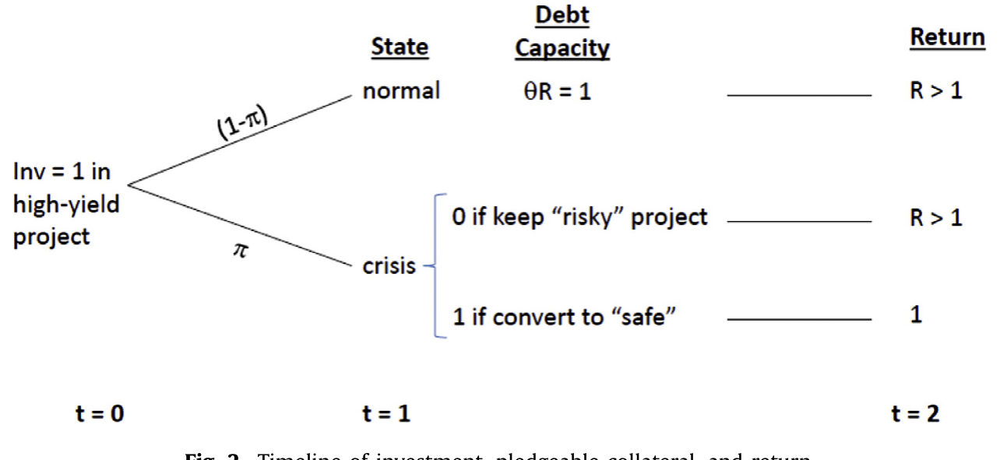
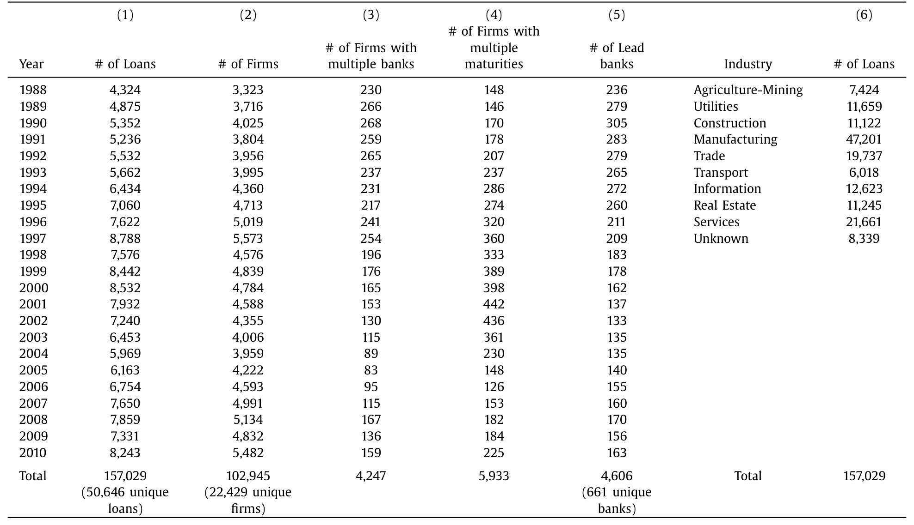
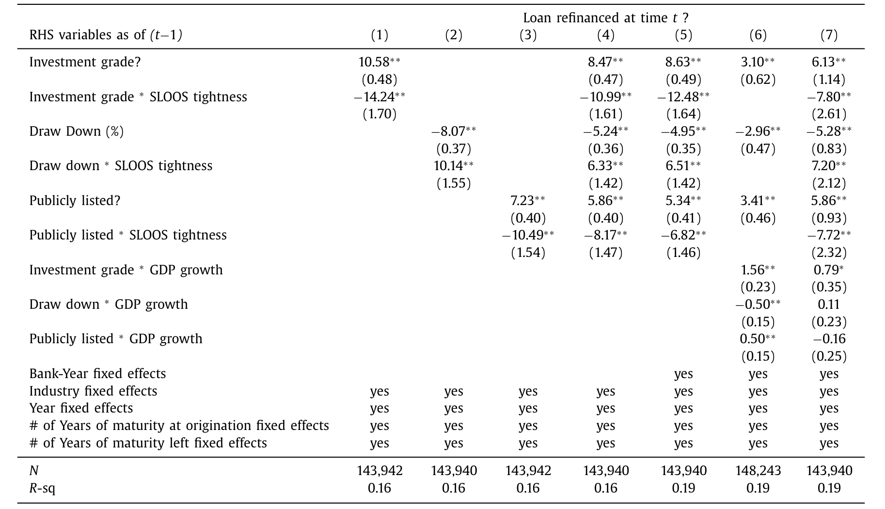
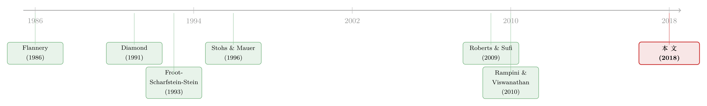

晴天才借得起伞：谁在用「提前续贷」对冲信用寒冬
本文读的是 Mian & Santos (2018, Journal of Financial Economics)：企业的「需求侧」动机，是贷款再融资顺周期 (procyclical) 的主要推手。信用宽松时，企业抢着提前再融资，把贷款的有效期限拉长，为的是对冲将来在信用收紧时被迫续贷的风险；而越是信用资质好的企业，越有本钱这么做——它们的再融资行为，因此对信用周期更敏感。
1 一个所有公司都躲不开的尴尬
先讲一个所有公司财务总监都心知肚明、却很少被写进教科书的尴尬。
公司的资产是「长寿」的：一条生产线、一座厂房、一个十年才能跑通的研发管线，都要用很多年。可是给它们融资的钱——尤其是银行贷款——却是「短命」的：三年、五年到期，到点就得还，或者重新谈一遍。于是企业一辈子都在做同一件事：一次又一次回到银行门口，请求把还没还完的债展期、重谈、或再融资 (refinance)。
问题是，银行的脸色不是一年四季都一样的。Mian 和 Santos 在文章开头放的那张 Fig. 1 把这件事画得淋漓尽致：贷款官调查里的「收紧标准」、「提高利差」，银行的资产冲销率，公司债的信用利差——这几条线在整个商业周期里上下翻飞，幅度大得吓人。换句话说，同一笔贷款，在好年景里续起来又便宜又顺，在坏年景里可能根本续不上、或者要被狠狠加价。
于是一个本该让人夜不能寐的风险就浮现了：万一我手里的贷款，偏偏要在信用最紧、利差最高的那个时点到期续命，怎么办？这就是所谓的流动性风险 (liquidity risk)——不是公司基本面出了问题，而是「不得不在错误的时间去借钱」这件事本身，就是一种风险。Bodnar、Graham、Harvey 和 Marston (2011) 对 CFO 做的调查直接证实了这一点：CFO 们真的会为「如何安排期限结构、避免在坏时候续债」而操心。
那么——一个自然的问题是——面对会呼吸的信用周期，一家公司到底应该怎么管理自己贷款的到期日？
2 真正的主角：不是银行，而是企业自己
读到这里，很多人脑子里会蹦出一个「供给侧」的故事：贷款顺周期，不就是因为银行嘛——银行有钱的时候多放、缺钱的时候少放，企业只是被动地被银行的资产负债表推着走。
这正是本文要掰过来的地方。
Mian 和 Santos 把镜头从银行转向了企业。他们关心的核心，是再融资行为在横截面上的差异：为什么有的公司续贷高度顺周期，有的却几乎不随周期波动？他们把答案归到两个需求侧 (demand-side) 动机上：
- 对冲需求 (hedging demand)：好天气里提前把伞借好，免得暴雨天淋成落汤鸡；
- 投资需求 (investment demand)：手上正好有个好项目要上马，于是提前锁定一笔长期、低利差的承诺资金。
要把这两个动机讲清楚，作者先搭了一个极简的理论模型——它直接脱胎于 Rampini 和 Viswanathan (2010) 关于「抵押品、风险管理与债务容量分配」的框架。这个模型是全文的灵魂，值得一步步拆开看。
3 三期模型：为什么只有「有钱人」才对冲得起
模型只有三期 \(t = 0, 1, 2\)。所有人风险中性、不贴现、市场完备，借贷市场充分竞争因而以零预期利率放款。每家企业手上都有同一个投资机会，时间线见下图。

Figure 2: Timeline of investment, pledgeable collateral, and return
图 2：模型的时间线 —— 投资、可抵押品与回报
设定
企业可以投一个高收益项目：\(t=0\) 投入一单位资本，\(t=2\) 得到回报 \(R > 1\)。但这个回报有个致命的附加条件——它要求企业必须在 \(t=1\) 成功把贷款续上。
\(t=1\) 有两种世界，发生概率分别是 \((1-\pi)\) 和 \(\pi\)：
- 正常态 (normal)：\(R\) 中有一部分 \(\theta < 1\) 是可抵押 (pledgeable) 的；
- 危机态 (crisis)：\(R\) 完全不可抵押。
危机态里抵押能力的崩塌，可以理解成不确定性骤升、银行突然不认你的资产了。为简化记号，作者令 \(\theta^* R = 1\)。
企业总有一条退路：把高收益项目转成一个完全可抵押的低收益「安全」项目，它在 \(t=2\) 给出一个为一的毛回报。你可以把这种转换想成银行用更严苛的契约把企业的手脚绑住，牺牲回报换安全。
企业之间唯一的差别，是 \(t=0\) 时的净财富 \(\omega\)。
（关于「可抵押性决定一笔贷款长成什么样」这条暗线，可参见《一笔贷款长成什么样，取决于『未来谁来接盘』》。）
关键一步：买一份「不必续贷」的保险
由于市场完备，企业可以在 \(t=0\) 花 \(\pi\) 单位的钱，买到 \(t=1\) 的一单位资本——这本质上就是一份对冲危机态的保险。
现在比较两种策略的利润。令 \(Z_{NR}\) 为「不需要在 \(t=1\) 续贷」的企业的总利润，\(Z_R\) 为「不得不续贷」的企业的总利润：
$$Z_{NR} = R - 1 - c, \qquad Z_R = (1-\pi)(R-1)$$
其中 \(c\) 是买够保险、从而完全避免在危机态续贷的成本。被迫续贷的企业，只能在危机态转去安全项目，于是它的回报被概率 \((1-\pi)\) 打了折——这就是 \(Z_R\) 的来历。
接下来是全文最漂亮的一笔。设 \(l_{NR}\) 为采取「不续贷」策略的企业在 \(t=0\) 借的款。由于要给这笔贷款买保险，\(c = \pi \cdot l_{NR}\)。一个利润最大化的企业当然想让 \(c\) 越小越好，也就是 \(l_{NR}\) 越小越好——于是它会把自己全部的净财富 \(\omega\) 都砸进去，要么作首付、要么买保险。这给出预算约束：
$$\omega = 1 - l_{NR} + \pi \cdot l_{NR} \;\Longrightarrow\; l_{NR} = \frac{1-\omega}{1-\pi}$$
净财富越高的企业，外部借得越少，需要买的保险也越少。把 \(c = \pi \cdot l_{NR}\) 代回去，「不续贷」策略的利润就成了净财富 \(\omega\) 的函数：
这个式子说的是一件很直觉的事：对冲是要花钱的，而越穷的公司，对冲越贵。
门槛：谁有资格对冲？
由于期望可抵押品最多为一，企业能借的贷款上限是一，对应的保险成本上限是 \(c = \pi\)。于是只有净财富满足
$$\omega \ge \bar{\omega}, \qquad \bar{\omega} = \pi$$
的企业，才攒得起足够的本钱「既投资、又对冲」。临界企业的利润是 \(Z_{NR}(\bar{\omega}) = R - 1 - \pi\)。
而 \(\omega < \pi\) 的低净值企业怎么办？它们对冲不起，只能把全部借款能力用来投资今天，赌一把——指望危机不来；一旦危机来了，就被迫转去低收益的安全项目，落得个 \(Z_R = (1-\pi)(R-1)\)。
于是模型的核心结论，干净得近乎残酷：
只有高净值（更有信用资质）的企业，才同时买得起「投资」和「对冲」两样东西；低净值的企业被逼着二选一，最后选了投资、放弃了对冲。
这正是 Rampini 和 Viswanathan (2010) 的洞见：风险管理不是穷人的奢侈品，而恰恰是富人的特权。把它翻译成可检验的话就是——信用越好的公司，再融资行为越顺周期。 因为当信用收紧（经济掉进危机态）时，需要续贷的偏偏只剩下那些没对冲、被逼到墙角的低净值公司。
再加一层：投资需求
模型还有第二条腿。如果把 \(t=0\) 的投资规模也内生化（假设企业主和银行都厌恶把太多财富压在单一项目上，从而对规模有风险厌恶），那么更赚钱、更高净值的企业会投得更大。这就引出投资需求假说——它来自 Froot、Scharfstein 和 Stein (1993) 那篇关于「协调企业投资与融资政策」的经典：有近期强投资机会的企业，会想提前锁定信用承诺。于是预测变成：一笔贷款被再融资、尤其是被「提前」再融资（远在到期之前），应该预示着更高的投资增长。
对冲需求和投资需求之间，存在一种天然的互补——这一点 Froot 等人当年就强调过。下面就看数据怎么说。
4 识别策略：把「银行」从故事里减掉
模型有了，最大的实证拦路虎也就清楚了：怎么把企业的需求侧动机，和银行的供给侧冲击分开？
毕竟，如果信用收紧时续贷变少，完全可能是因为受了资本损失的银行在主动缩表、拒绝续贷——这是个纯供给侧的故事，和企业的对冲需求毫无关系。
作者的招法是银行—年份固定效应 (bank-year fixed effects)。直觉很简单：把同一年、由同一家牵头行 (lead bank) 放给不同企业的贷款放在一起比。既然是同一家银行、同一年，那么这家银行当年所有的资本状况、流动性压力、放贷意愿等等「银行特定的、随时间变化的信用供给冲击」，就被这个固定效应非参数地吸收干净了。剩下的横截面差异，只能归因于企业之间的不同——也就是需求侧。
这套设计还顺手提供了一个漂亮的「反事实检验」：如果真是银行供给侧在驱动，那么信用收紧时，银行应该先砍掉那些更不靠谱、信用更差的边缘企业。可数据显示的方向完全相反——是信用最好的企业的续贷，对周期最敏感。这与供给侧故事南辕北辙，却与对冲需求假说严丝合缝。
5 数据：一份能「跟踪贷款一辈子」的独门数据
这篇文章能成立，七成功劳要记在数据上。
主流的银团贷款研究用的是 DealScan、DealLogic——但它们只记录贷款发起时 (at origination) 的样子，贷款一旦放出去就跟丢了。Mian 和 Santos 用的是美联储、FDIC 和货币监理署联合运行的 共享国民信贷计划 (Shared National Credit, SNC)：它在每年年底 (12月31日) 对所有规模超过 2000 万美元、且被三家以上联邦监管机构持有的信贷做一次普查。
关键就在「每年都查一次」。这让作者第一次能够把同一笔贷款年复一年地串起来，观察它到底有没有、在什么时候被续了。他们对「再融资」的定义干脆利落：贷款 \(i\) 在第 \(t\) 年的到期日，若晚于它在第 \(t-1\) 年的到期日，就算这一年被再融资了。
数据规模见表 1：50,646 笔不重复的银团贷款、157,029 个贷款—年观测、22,429 家不重复借款企业、661 家不重复牵头行，覆盖 1988–2010 三个完整的商业与信用周期；主回归样本聚焦 1998–2010。SNC 还能匹配上 Compustat、CRSP 拿企业财务与股价，匹配 Call Report/Y9C 拿银行数据。一个值得记住的基准数字：无条件再融资概率为 21.6%。

Table 1
表 1：SNC 数据的年度与行业分布
6 三个核心发现：把伞、把信用、把投资一起讲透
发现一：好天气里，大家抢着「提前」借伞
第一块拼图直接验证对冲需求。企业确实会在信用条件好的时候，远在现有贷款到期之前就提前续贷、拉长期限。量级有多大？「提前续贷 vs. 到期续贷」的相对倾向（风险比, hazard ratio），在信用条件好时上升超过 50%。 而且加上银行—年份固定效应后，这种提前续贷的顺周期性依然站得住——它不是银行供给冲击造的假象。
这种提前续贷的后果，正是「riding out」（扛过去）的能力：那些在好时候提前续上的企业，就不必在信用最贵的坏时候被迫去续命了。对冲动机强到什么程度？当便宜信贷时期续贷激增时，存量贷款的有效期限会拉长约 16%。 伞，确实是在晴天借的。
（这与「高评级公司把未动用的抵押品留作坏天气的救生艇」是同一种智慧，可参见《未动用的抵押品，是高评级公司留给坏天气的「救生艇」》；而把期限主动匹配资本年龄的思路，则见《飞机要换，债也要「换」》。）
发现二：越是信用好的公司，越随周期起舞
这是全文最反直觉、也最有力的一击。作者用一大堆口径来衡量「信用资质」——评级更高、能进债券和股票市场、手里握着未动用贷款承诺额度的企业——结论一致：信用越好的企业，再融资行为越顺周期。
最刺眼的一个数字：投资级 (investment grade) 贷款的再融资倾向，对信用市场条件的敏感度，几乎是非投资级贷款的四倍。 而且这个结果在加入银行—年份固定效应后纹丝不动——再次排除了银行供给侧。
请注意这里的逻辑反转：常识会觉得「坏公司」才该在周期里大起大落，可数据说的恰恰是「好公司」更敏感。原因正是模型给的——只有信用好、净值高的企业，才有余力在晴天对冲；一旦信用收紧，还在被迫续贷的，反倒是那些从来没钱对冲的弱者。系统性更弱的企业，反而更暴露在信用收紧的风暴里。 这给 Flannery (1986)、Diamond (1991) 那一脉「银行故意把弱企业的贷款期限压短以保留控制权」的理论，提供了实证支持。

Table 5: explicitly estimates how the correlation be- conditions for creditworthy borrowers
表 5：再融资顺周期性与借款人信用质量
发现三：续贷预示投资，提前续贷预示更猛的投资
第三块拼图回到投资需求。结果与假说一致：一笔贷款被再融资，正向预测随后更强的资本支出 (capital expenditure) 增长。
但真正关键的一步，是这层预测关系本身也是顺周期的：在 2007–2008 金融危机这样的低谷期，续贷和投资之间根本没有这种正向关系。这恰恰又一次把供给侧故事挡在门外——如果是「信用供给不足拖住了投资」，那么在低谷期我们反而应该看到续贷与投资之间更强的正相关（续上的就投、续不上的就投不了）。现实却是相反。
而提前续贷，预示的投资增长比普通续贷还要更强。这与「有强未来投资机会的企业想提前锁定更长时间的低利差」完全吻合——对冲需求与投资需求，在这里漂亮地合流了。
7 文献脉络：从「期限之谜」到「会呼吸的周期」
把这篇文章放回它所在的河流里，脉络其实很清晰。
最早，债务期限理论关心的是企业的静态属性：Flannery (1986)、Diamond (1991) 论证银行为何刻意把（尤其是风险较高的）企业的贷款期限压短，以换取更强的控制权。但这一脉，用作者自己的话说，「聚焦于企业属性，却忽视了再融资风险本身」。
接着，风险管理理论登场。Smith 和 Stulz (1985) 奠定了企业为何对冲的微观基础；Froot、Scharfstein 和 Stein (1993) 把对冲与投资政策协调起来；Leland (1998) 把风险管理塞进资本结构。到了 Rampini 和 Viswanathan (2010)，一个动态框架把「抵押品、风险管理与债务容量的分配」一并讲透——好企业对冲得多，受约束的企业把有限的借贷能力全押在今天的投资上。这正是本文模型的直接母体。
与此同时，一批实证刻画期限的工作积累起来：Stohs 和 Mauer (1996) 等人记录了公司债务期限结构的决定因素；Sufi (2007)、Santos 和 Winton (2008) 用银团贷款数据研究信息与定价；Roberts 和 Sufi (2009)、Roberts (2014)、Paligorova 和 Santos (2017a, 2017b) 则把镜头对准了贷款的重新谈判与展期风险。

而本文所处的位置，是把上面三条线拧成一股：它不再把期限当成发起时一次定死的静态选择，而是用 SNC 这份「能跟踪贷款一辈子」的数据，证明企业是在持续地、随着信用周期主动地通过提前续贷来管理债务期限——并且把「谁更能这么做」干净地归到了需求侧的信用资质上。
8 评论与延伸（Q&A + 研究方向）
(a) 几个可能的疑问
Q：这篇文章的「再融资」，和债务重新谈判 (renegotiation) 是一回事吗？
不完全是。本文的再融资有一个很具体的操作化定义：贷款在年末的到期日比上一年末更晚，就算被续了。它捕捉的是期限被主动拉长这件事，重点在「有效期限管理」；而 Roberts-Sufi 那一脉的重新谈判，更强调契约条款在事件驱动下的整体重订。两者重叠但侧重不同。
Q：银行—年份固定效应，真的能把供给侧冲击扫干净吗？
它能吸收的是银行层面、随时间变化的冲击——同一家银行同一年对所有客户的统一态度。它管不住的是「银行对不同企业的差别化对待」。但作者用了一个很聪明的方向性检验来补这个洞：若是供给侧驱动，收紧时该先砍差企业；而数据显示对周期最敏感的是好企业，方向正好相反。这比固定效应本身更有说服力。
Q：信用好的公司续贷更顺周期，会不会只是因为它们本来就更频繁地接触市场？
作者用了多种信用资质口径（评级、能否进债/股市场、有无未动用承诺额度），结论一致，这降低了单一机制解释的概率。更重要的是，模型给的不是「接触频率」而是「对冲能力」——是净值高才对冲得起，这与「投资级敏感度约为非投资级四倍」的量级是自洽的。
Q：21.6% 的无条件再融资概率，会不会被数据构造低估了？
会，而且作者诚实地承认了。贷款若因规模缩小或持有机构不足三家而掉出 SNC 样本，会被默认成「未续贷」，所以这个定义系统性低估了真实续贷水平。但作者关心的是时间序列上的周期性波动，没有特别理由认为这种构造会让周期模式朝某个方向偏，所以核心结论不受威胁。
Q：模型里「危机态 R 完全不可抵押」是不是太极端了？
是个简化，但抓住了要害——危机的本质就是抵押能力的骤然蒸发。把它放松成「危机态可抵押比例大幅下降但非零」，定性结论（只有高净值企业既投资又对冲）不会变，只是门槛 \(\bar\omega\) 的表达式会复杂一些。极端设定换来的是模型的透明。
Q：这对「银行靠短期限保留控制权」的理论意味着什么？
它给了正面支持，但补了一个动态视角。Flannery-Diamond 说银行刻意把弱企业期限压短；本文则显示，正因为弱企业对冲不起，它们才被迫一次次在坏时候续命，从而系统性地更暴露在信用收紧里。控制权理论关心银行的动机，本文关心的是这种安排在周期里落到了谁头上。
(b) 几个可能的研究问题与提案
1. 把这套「对冲—投资」逻辑搬到公司债的展期风险上。
【经济故事】本文讲的是银团贷款。但公司债的滚动风险 (rollover risk) 同样致命，且债券持有人结构（外资、共同基金、保险）远比银团分散。信用好的发行人是否也在好年景里提前发债、拉长期限来对冲？谁接了这些债，会不会改变对冲的有效性？
【可行性】中。数据可用
TRACE+ Mergent FISD 构造发行与到期，信用周期用利差度量。识别上缺了「同一牵头行」这种干净的供给侧控制，需要用承销商×年份或评级×年份固定效应替代，没有银团那么利落。
2. 外资持有人是不是「更靠不住的伞」？
【经济故事】危机态里抵押能力蒸发，本质是「资金提供方临阵退场」。如果一家公司的债更多被外资持有，而外资在全球避险时撤得更快，那么它的「对冲」在最需要的时候反而更可能失灵。这能把本文的需求侧故事，和外资资金流的顺周期性接起来。
【可行性】中。需要债券层面的持有人国别数据（如 eMAXX、或央行 TIC 类数据），与到期/续作行为匹配。识别可借「全球避险冲击」作为外生时点。难点在持有人数据的覆盖与精度。
3. 未动用贷款承诺额度，是对冲的「替代品」还是「互补品」？
【经济故事】本文把「有未动用承诺额度」当作信用资质的一个度量。但额度本身就是一种流动性保险（参见《借得到，却用不上》）。那么提前续贷和动用额度，在企业的对冲组合里是替代还是互补？信用收紧时，企业先用哪一个？
【可行性】高。SNC 同时报告承诺额与未动用额，无需外接数据即可在同一框架里检验，是对本文最自然的延伸。
4. 把「有效期限拉长 16%」翻译成违约与利差。
【经济故事】对冲若真有价值，应当体现在结果上：在信用寒冬里，提前续过贷、有效期限更长的企业，是否违约更少、二级利差更低？这能给「对冲创造价值」补上一个直接的、可定价的证据。
【可行性】中。结果变量用 SNC 的贷款表现 +
TRACE利差。难点是内生性——能提前续贷的本就是好企业，需要用信用条件作为外生的「续贷机会」冲击来做工具变量或事件研究。
9 我的判断
这篇文章最漂亮的地方，是它用一份「冷门但独门」的数据，把一个看似纯供给侧的现象（贷款顺周期）干净地翻译成了需求侧的故事，而且这个翻译既有一个透明的三期模型撑腰，又有一个聪明的方向性检验（收紧时敏感的是好企业而非坏企业）把最大的替代解释挡在门外。「投资级敏感度约为非投资级四倍」这种量级，是那种一旦看到就很难忘掉的事实。
要说对识别的担心，我会盯住两处。其一，银行—年份固定效应吸收的是银行的「平均态度」，对「银行在周期里差别化地优待好客户」这种供给侧的横截面机制无能为力——而这恰恰能产生和需求侧一模一样的预测；作者的方向性检验缓解了它，但没有彻底关上门。其二，「续贷预示投资」始终带着选择问题：能提前续贷的本就是手握好项目的好公司，投资增长究竟是续贷「带来」的，还是两者同被一个未观测的好机会驱动的，文章用「低谷期关系消失」做了很有力的旁证，但离一个真正外生的续贷冲击仍有距离。
后续我最想看到的，是把「有效期限拉长 16%」这件事一路追到结果端：在下一场信用寒冬里，那些提前借好了伞的企业，是不是真的少违约、少裁员、利差更低？只有当对冲的价值在坏天气里被真金白银地兑现出来，这个故事才算讲到了最后一句。
参考文献
Leland, H. (1998). Agency costs, risk management, and capital structure. Journal of Finance 53(4), 1213–1243.
Paligorova, T., & Santos, J. (2017b). Banks' exposure to rollover risk and the maturity of corporate loans. Review of Finance 21, 1739–1765.
Rampini, A., & Viswanathan, S. (2010). Collateral, risk management, and the distribution of debt capacity. Journal of Finance 65(6), 2293–2322.
Roberts, M., & Sufi, A. (2009). Renegotiation of financial contracts: evidence from private credit agreements. Journal of Financial Economics 93, 159–184.
Santos, J. (2011). Bank corporate loan pricing following the subprime crisis. Review of Financial Studies 24(6), 1916–1943.
Santos, J., & Winton, A. (2008). Bank loans, bonds, and information monopolies across the business cycle. Journal of Finance 63(3), 1315–1359.
Smith, C., & Stulz, R. (1985). The determinants of firms' hedging policies. Journal of Financial and Quantitative Analysis 20(4), 391–405.
Stohs, M., & Mauer, D. (1996). The determinants of corporate debt maturity structure. Journal of Business 69(3), 279–312.
Sufi, A. (2007). Information asymmetry and financing arrangements: evidence from syndicated loans. Journal of Finance 62, 629–668.